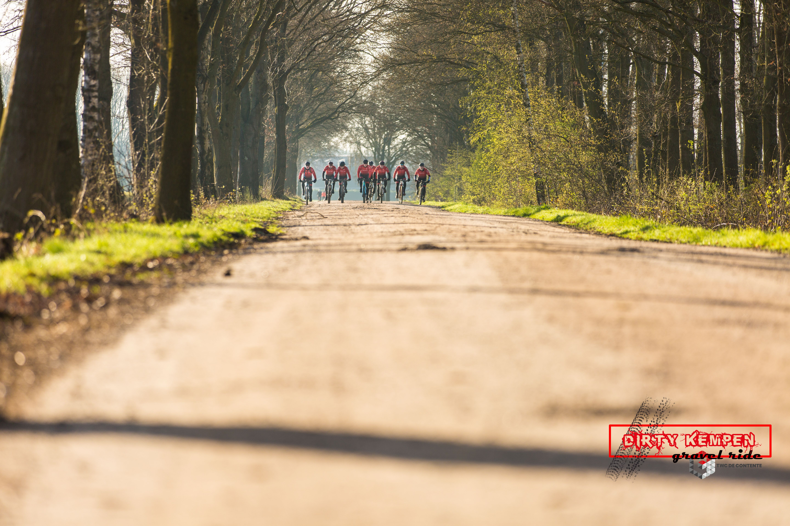
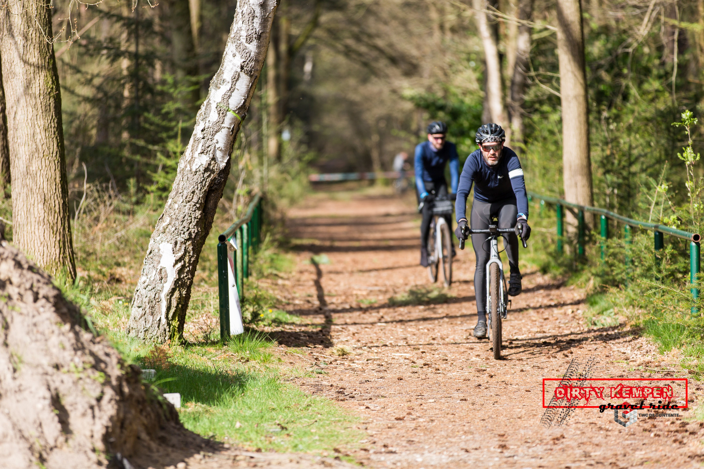

Na de eerste editie, nu een Paaseditie! Op 10april 2023 organiseert TWC de Contente Eersel de 2e “Dirty Kempen Gravel Ride”
Na de eerste editie, nu een Paaseditie! Op 10april 2023 organiseert TWC de Contente Eersel de 2e “Dirty Kempen Gravel Ride”
De rit voert over de mooiste heide- en bospaden, dreven, gravelstroken en halfverharde wegen van de Nederlandse en Belgische Kempen. Uitgezet door onze beste routebouwers rijd je een geweldige GPX track van 80 of 115km. Er is technische ondersteuning op afroep beschikbaar. Eersel, Bladel, Arendonk, Ravels, De Mierden, zomaar wat plaatsen waarvan jij nog niet wist dat ze zo mooi konden zijn!
Het is een volledige verzorgde tocht, dus een paasontbijt met een eitje voor de voorinschrijvers, een goed verzorgde post onderweg en na afloop een biertje, een fatsoenlijke burger en muziek van een DJ is wat je van de organisatie mag verwachten om het afzien te verzachten.
Inschrijven: vanaf 1 februari 2023 mogelijk
Voor wie is deze tocht: Voor de gravelbike en mountainbike
Welke afstanden zijn er: 80 of 115 km
Starttijd: 08:00 - 12:00 uur
Startlocatie: Molenveld 12 in Eersel
Plan je route hier: Link
Inschrijven: Online inschrijven of ter plaatse inschrijven
Kosten: 15 euro\
De GPX bestanden van de tocht worden enkele dagen voor aanvang verstuurd via e-mail.
 